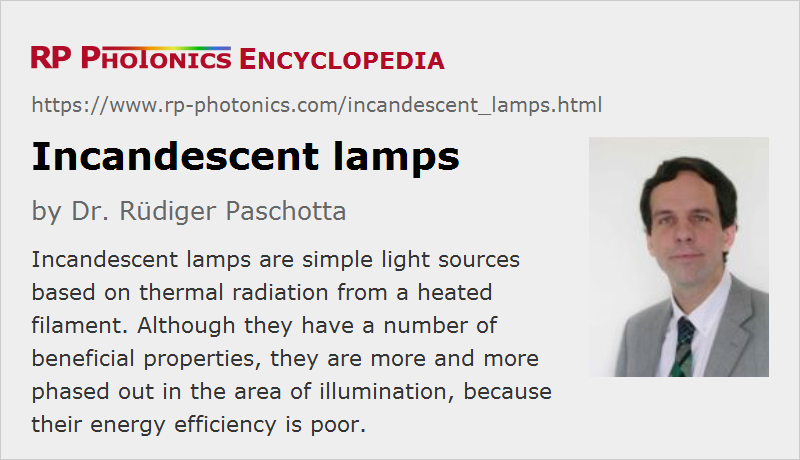

Incandescent Lamps
Definition: light sources which produce thermal radiation from an electrically heated filament
Alternative term: light bulbs
More general term: light sources
More specific terms: halogen lamps
German: Glühlampen
Category: non-laser light sources
How to cite the article; suggest additional literature
Author: Dr. Rüdiger Paschotta
Incandescent lamps are light sources which produce thermal radiation from an electrically heated filament. Typically, that filament is made from tungsten, which allows for operation at relatively high temperatures of the order of 2400 to 2800 K, and even up to around 3200 K for halogen lamps. Early incandescent lamps were made with a carbon filament, which was much less temperature-resistant.
The filament may be supported only by the two current-carrying wires, or alternatively also by additional support wires, which are fixed in an insulating glass mount.
In order to prevent rapid oxidation of the filament, one places it in a glass bulb, which is either evacuated or (more frequently) filled with some low-pressure inert gas like nitrogen, argon or krypton, which slows down the evaporation of the filament material but also carries away some heat. The latter effect can be minimized by choosing a gas with heavy atomic weight such as krypton or xenon. (Note that these should not be called krypton or xenon lamps, because those are gas discharge lamps.) The gas filling should also be free of any water vapor, which could substantially reduce the lifetime. The size of the glass bulb is chosen large enough to avoid excessive temperatures during operation, and to limit effects of darkening by evaporated filament metal. The glass can be clear, making the filament visible from outside, or frosted (see Figure 1) for reduced glare.
Most incandescent lamps have some common kind of electrical socket. For example, the E27 and E14 sockets (see Figure 1) are common for ordinary household lamps. They can simply be screwed into a suitable fixture.
Incandescent lamps can be made for different operating voltages. Household lamps are typically operated with grid voltages like 230 V or 110 V and therefore need to have a quite thin filament, which unfortunately makes them more sensitive to mechanical shock, also to gradual evaporation of the material during operation. Low-voltage lamps, e.g. for 6 V and 12 V, can be made with much thicker filaments, since they need to have a lower electrical resistance.
The filament of a lamp made for high operation voltages must be quite thin and long. It is often double-coiled, which means that one uses a coil of thin wire and coils that again. That configuration offers an improved trade-off between efficiency and lifetime (see below). For low-voltage lamps, single coiling or even no coiling at all is sufficient.
The filament should have a very uniform diameter, since a part with only slightly reduced diameter would become hotter due to its increased resistance, and the lamp lifetime could be reduced substantially. Unfortunately, an increasing amount of diameter non-uniformity can arise during operation, where material loss by evaporation may well not be completely uniform.
Energy Efficiency and Lifetime of Incandescent Lamps
The efficiency of visible light generation in incandescent lamps is quite low, because most of the thermal radiation is in the infrared spectral region. That infrared light is typically not usable, except that it can somewhat support the heating system of the building (see below). For the luminous efficacy, which is relevant for lighting applications, only the visible output counts (with a wavelength-dependent weight factor), while the infrared emission is considered as wasted energy. Typically achieved values are of the order of 15 lm/W for household lamps – tentatively higher for higher-power bulbs.
The luminous efficacy rises significantly with increased operation temperatures, which however at the same time also rapidly reduce the lamp lifetime. For typical lighting applications, the resulting trade-off between efficiency and lifetime leads to designs which have a lifetime of the order of 1000 hours. For some applications where lifetime is more critical than efficiency, e.g. for some signal lamps, one uses lower operation temperatures. That approach would not be reasonable for lighting applications, where the occasionally required exchange of the relatively cheap lamps is acceptable, while electricity consumption causes most of the lifetime cost. For some applications like projectors in photographic labs, one uses higher operation temperatures for maximum brightness, sacrificing much of the potential device lifetime.
The mentioned trade-off is somewhat relaxed for lamps operated with a lower voltage of e.g. 110 V instead of 230 V, because the then thicker filament can be operated at somewhat higher temperatures. Very low voltages (few volts), however, are also problematic because the then required thick electrical wires conduct substantial thermal powers away from the filament.
During operation, there is often a significant darkening of the bulb due to deposition of evaporated metal from the filament on the inner surface of the bulb. That further decreases the light output and efficiency.
The poor energy efficiency of incandescent lamps is sometimes excused with their contribution to the heating of buildings. This argument, however, is not very strong. First of all, depending on climate conditions, a significant fraction of the yearly operation hours may fall into times where the heating effect is not required or even unwelcome. (In the worst case, an air conditioner consumes additional energy to remove the waste heat.) Second, electric heating is quite inefficient, typically requiring two or three times more primary energy for electricity generation than would be required for heating with a gas burner, for example.
Electrical Characteristics
The electrical resistance of the tungsten filament increases with increasing temperature. While this creates a kind of self-stabilizing effect for the filament as a whole, temperature inhomogeneities are amplified: parts of the filament which are hotter than others for some reason will receive increased electrical heating. Besides, it leads to a quite high turn-on current for operation with a constant voltage, as usual. The end of lifetime is often reached just during turn-on.

In contrast to many other light sources such as gas discharge lamps and light emitting diodes, incandescent lamps usually do not require any additional electrical components for connection to the grid. However, many halogen lamps require some transformer or a kind of electronic device for supplying the required lower operation voltage. Others are designed for operation at the grid voltage (see Figure 3).
Incandescent lamps are purely resistive loads, i.e., they have a power factor of unity, and there are no reactive currents. Also, the generation of electrical harmonics is largely avoided. All that can change, however, when using a dimmer.
Special Forms of Incandescent Lamps
Some incandescent lamps are filled with a halogen gas which somewhat relaxes the trade-off between efficiency and lifetime. Such halogen lamps work particularly well with low operation voltages, but can also be made for the typical electrical grid voltages.
To a lower extent, the efficiency can be somewhat improved with special gas fillings like krypton or xenon. Due to the high cost, that approach is however more or less limited to small bulbs.
Various Practical Aspects
The brightness of a lamp can be reduced with a relatively simple dimmer circuit, typically with phase-angle control. However, dimmed incandescent lamps are even substantially more inefficient than lamps operated at full power. Also, the color temperature gets lower, which may or may not be welcome.
The optical spectrum of light from incandescent lamps is very smooth and exhibits a color temperature of the order of 2500 K, which is significantly lower than that of normal daylight. This “warm light tone” is often considered as appropriate for lighting applications, but not e.g. for photography. For office lighting, higher color temperatures are desirable, because they increase the productivity; personnel tends to get less tired.
The produced light is free from flicker even for operation with alternating current with 50 Hz, for example, due to the thermal capacity of the filament. That capacity is a limiting factor, however, for applications where rapid switching or light pulse generation is required. Note also that frequent switching reduces the lamp lifetime; each turn-on process costs a substantial bit of lifetime. That effect can be substantially reduced by a slower turn on, e.g. with a dimmer circuit.
The production of incandescent lamps is quite cheap, and no problematic materials are required, so that disposal is not critical. However, the operation can have a substantial environmental impact due to the side effects of electricity generation, particularly when using electricity from coal-powered stations. In that case, the environmental pollution with mercury, for example, can be substantially more than that from using mercury-based fluorescent lamps – even without proper lamp recycling.
Applications of Incandescent Lamps
Incandescent lamps are still widely used for general illumination purposes e.g. in households. However, they are more and more phased out, partially driven by government regulations, because of their inferior energy efficiency. In earlier years, they have typically been replaced with fluorescent lamps – initially with large tubes, later also by compact fluorescent lamps (CFL) which can often be inserted into the same fixtures as incandescent lamps (if sufficient space is available for the tentatively larger lamps). Nowadays, lighting is more and more done with light emitting diodes (LEDs), which are even somewhat more efficient than fluorescent lamps, often much more compact, and environmentally more friendly because they do not require mercury.
There are applications where incandescent lamps are difficult to replace with other light sources. For example, their ability to operate in a very wide range of ambient temperatures is important for operation in ovens. Note, however, that high-temperature operation requires special water-free bulb glasses.
Special forms of small incandescent lamps are used as infrared emitters, e.g. for infrared absorption spectroscopy.
Suppliers
The RP Photonics Buyer's Guide contains 4 suppliers for incandescent lamps.
Questions and Comments from Users
Here you can submit questions and comments. As far as they get accepted by the author, they will appear above this paragraph together with the author’s answer. The author will decide on acceptance based on certain criteria. Essentially, the issue must be of sufficiently broad interest.
Please do not enter personal data here; we would otherwise delete it soon. (See also our privacy declaration.) If you wish to receive personal feedback or consultancy from the author, please contact him e.g. via e-mail.
By submitting the information, you give your consent to the potential publication of your inputs on our website according to our rules. (If you later retract your consent, we will delete those inputs.) As your inputs are first reviewed by the author, they may be published with some delay.
See also: halogen lamps, thermal radiation, infrared emitters, gas discharge lamps
and other articles in the category non-laser light sources
|  |
If you like this page, please share the link with your friends and colleagues, e.g. via social media:
These sharing buttons are implemented in a privacy-friendly way!